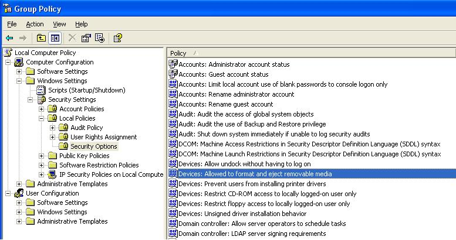

By default, both Windows Vista and Windows Server 2008 grant read/write access to administrators and users logged directly into the machine (intermediate users). However, in Windows XP and Windows Server 2003 an administrator must grant these device read/write privileges to other user groups.
An administrator may adjust specific device-related permissions for power users and interactive users.
To reach the appropriate group permissions panel in Windows XP, click Start, click Run, type gpedit.msc, and then click OK. In the Group Policy interface, expand Computer Configuration, expand Windows Settings, expand Security Settings, expand Local Policies, and double-click Security Options.

At this panel, an administrator must specify the settings of two device options to provide the required group permissions:
While a specific UI does not exist in Windows XP or Windows Server 2003 for the use of SetSecurityInfo or SetupDiSetDeviceRegistryProperty, it is possible to use these APIs to grant custom user groups device permissions. For example, a call to SetSecurityInfo will grant permissions to user groups. Permission changes with this API are temporary and will not persist across a reboot. However, calling SetupDiSetDeviceRegistryProperty will implement the permission changes in the registry, which will persist across a reboot.
SetupDiSetDeviceRegistryProperty
Â
Â